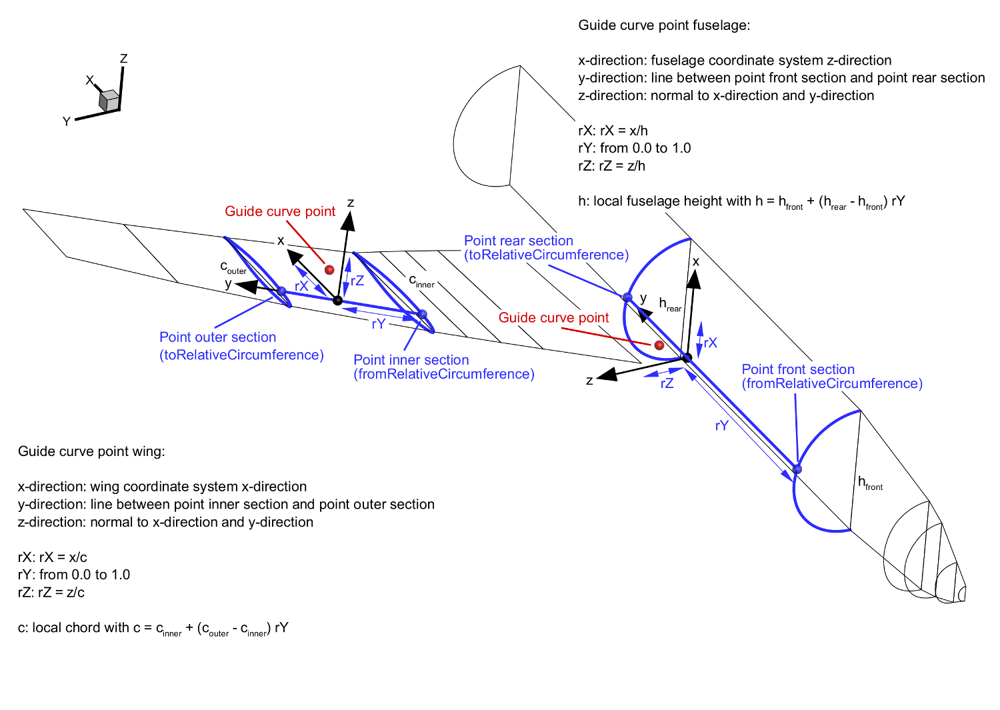

complexType · extension complexBaseType · sequence
Guide curve
A guide curve may be used to alter the shape of the outer geometry and "guide" the loft. The guide curve profiles are defined in the guideCurveProfileGeometryType. Their use on wing and fuselage components is illustrated in the image below.

| Name | Type | Constraints | Use | Default | Description |
|---|---|---|---|---|---|
@externalDataDirectory | xsd:string | optional | Directory of the external data file | ||
@externalDataNodePath | xsd:string | optional | Path of the node inside the external data file | ||
@externalFileName | xsd:string | optional | Name of the external data file | ||
@uID | xsd:ID | required | UID |
| Name | Type | Constraints | OccurrenceHow often the element may appear at this place. The schema writes it as minOccurs and maxOccurs on the declaration. | Default | Description |
|---|---|---|---|---|---|
| sequenceThe children below must appear in exactly this order. Each may repeat as often as its own occurrence allows. | |||||
name | stringBaseType | [1..1] required | Name | ||
description | stringBaseType | [0..1] optional | Description | ||
guideCurveProfileUID | stringBaseType | [1..1] required | Reference to a guide curve profile | ||
| choiceExactly one of the alternatives below may appear, unless the occurrence next to this line says otherwise. | |||||
| sequenceThe children below must appear in exactly this order. Each may repeat as often as its own occurrence allows. | |||||
fromGuideCurveUID | stringUIDBaseType | [1..1] required | Reference to the previous guide curve from which this guide curve shall start | ||
continuity | stringBaseType | 5 values | [0..1] optional | Continuity definition for geometry generation. Possible options: C0, C1 from previous, C2 from previous, C1 to previous, C2 to previous. | |
| sequenceThe children below must appear in exactly this order. Each may repeat as often as its own occurrence allows. | |||||
| choiceExactly one of the alternatives below may appear, unless the occurrence next to this line says otherwise. | |||||
fromRelativeCircumference | doubleBaseType | [1..1] required | Reference to the relative circumference position from which the guide curve shall start. Valid values are in the interval -1.0...1.0. | ||
fromParameter | doubleBaseType | [1..1] required | Reference to the parameter position from which the guide curve shall start. Valid values are in the interval -1.0...1.0. | ||
tangent | pointXYZType | [0..1] optional | Tangent at first point | ||
| sequenceThe children below must appear in exactly this order. Each may repeat as often as its own occurrence allows. | |||||
| choiceExactly one of the alternatives below may appear, unless the occurrence next to this line says otherwise. | |||||
toRelativeCircumference | doubleBaseType | [1..1] required | The relative circumference position at which the guide curve shall end. Valid values are in the interval -1.0,..,1.0. | ||
toParameter | doubleBaseType | [1..1] required | The parameter position at which the guide curve shall end. Valid values are in the interval -1.0...1.0. | ||
tangent | pointXYZType | [0..1] optional | Tangent at last point | ||
rXDirection | pointXYZType | [0..1] optional | Local direction along which the relative x-coordinates of the guide curve points are defined. For the wing the default is the wing's local x-axis, for the fuselage its the fuselage's local z-axis. | ||
cpacs/vehicles/aircraft/model/ducts/duct/segments/segment/guideCurves/guideCurvecpacs/vehicles/aircraft/model/fuselages/fuselage/segments/segment/guideCurves/guideCurvecpacs/vehicles/aircraft/model/wings/wing/segments/segment/guideCurves/guideCurvecpacs/vehicles/aircraft/model/enginePylons/enginePylon/segments/segment/guideCurves/guideCurvecpacs/vehicles/aircraft/model/fuelTanks/fuelTank/vessels/vessel/segments/segment/guideCurves/guideCurvecpacs/vehicles/rotorcraft/model/fuselages/fuselage/segments/segment/guideCurves/guideCurvecpacs/vehicles/rotorcraft/model/wings/wing/segments/segment/guideCurves/guideCurvecpacs/vehicles/rotorcraft/model/rotorBlades/rotorBlade/segments/segment/guideCurves/guideCurvecpacs/vehicles/deckElements/ceilingPanelElements/ceilingPanelElement/geometry/multiSegmentShapes/multiSegmentShape/segments/segment/guideCurves/guideCurvecpacs/vehicles/deckElements/classDividerElements/classDividerElement/geometry/multiSegmentShapes/multiSegmentShape/segments/segment/guideCurves/guideCurvecpacs/vehicles/deckElements/galleyElements/galleyElement/geometry/multiSegmentShapes/multiSegmentShape/segments/segment/guideCurves/guideCurvecpacs/vehicles/deckElements/genericFloorElements/genericFloorElement/geometry/multiSegmentShapes/multiSegmentShape/segments/segment/guideCurves/guideCurvecpacs/vehicles/deckElements/lavatoryElements/lavatoryElement/geometry/multiSegmentShapes/multiSegmentShape/segments/segment/guideCurves/guideCurvecpacs/vehicles/deckElements/luggageCompartmentElements/luggageCompartmentElement/geometry/multiSegmentShapes/multiSegmentShape/segments/segment/guideCurves/guideCurvecpacs/vehicles/deckElements/seatElements/seatElement/geometry/multiSegmentShapes/multiSegmentShape/segments/segment/guideCurves/guideCurvecpacs/vehicles/deckElements/sidewallPanelElements/sidewallPanelElement/geometry/multiSegmentShapes/multiSegmentShape/segments/segment/guideCurves/guideCurvecpacs/vehicles/deckElements/cargoContainerElements/cargoContainerElement/geometry/multiSegmentShapes/multiSegmentShape/segments/segment/guideCurves/guideCurvecpacs/vehicles/systemElements/genericElements/genericElement/geometry/multiSegmentShapes/multiSegmentShape/segments/segment/guideCurves/guideCurvecpacs/vehicles/systemElements/electricalElements/genericElectricalElements/genericElectricalElement/geometry/multiSegmentShapes/multiSegmentShape/segments/segment/guideCurves/guideCurvecpacs/vehicles/systemElements/electricalElements/storageElements/genericStorageElements/genericStorageElement/geometry/multiSegmentShapes/multiSegmentShape/segments/segment/guideCurves/guideCurvecpacs/vehicles/systemElements/electricalElements/storageElements/batteries/battery/geometry/multiSegmentShapes/multiSegmentShape/segments/segment/guideCurves/guideCurvecpacs/vehicles/systemElements/electricalElements/storageElements/capacitors/capacitor/geometry/multiSegmentShapes/multiSegmentShape/segments/segment/guideCurves/guideCurvecpacs/vehicles/systemElements/electricalElements/storageElements/inductors/inductor/geometry/multiSegmentShapes/multiSegmentShape/segments/segment/guideCurves/guideCurvecpacs/vehicles/systemElements/electricalElements/storageElements/superCapacitors/superCapacitor/geometry/multiSegmentShapes/multiSegmentShape/segments/segment/guideCurves/guideCurvecpacs/vehicles/systemElements/electricalElements/conversionElements/genericConversionElements/genericConversionElement/geometry/multiSegmentShapes/multiSegmentShape/segments/segment/guideCurves/guideCurve| Type | Name |
|---|---|
guideCurvesType | guideCurve |